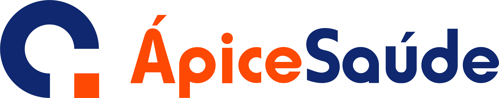
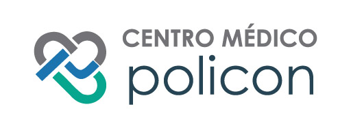

Ápice Saúde
A Ápice Saúde possui mais de 20 anos de tradição em qualidade e resolutividade no segmento da saúde em São João de Meriti. Oferece consultas, exames, pronto atendimento e cirurgias a preço popular. Conta com equipamentos de alta tecnologia, como o melhor e mais moderno tomógrafo da Baixada Fluminense.
Com essa parceria, o Cartão Amas expande o acesso a serviços de excelência para seus beneficiários na região.

Especialidades Oferecidas:
- Angiologia
- Alergista
- Clínica Geral
- Cardiologia
- Dermatologia
- Endocrinologia
- Fisioterapia
- Gastroenterologia
- Ginecologia
- Nutrição
- Neurologia
- Oftalmologia
- Ortopedia
- Otorrinolaringologia
- Pediatria
- Pneumologia
- Psiquiatria
- Psicologia
- Raio-X
- Reumatologia
Informações de Contato:
Endereço: Avenida Automóvel Clube, 63 - Centro
São João de Meriti, Rio de Janeiro - RJ
Horários: Segunda à Sexta (7h00 às 16h30)
Telefone: (21) 3668-3131
Acessar Site do ParceiroCentro Médico Policon
O Centro Médico Policon é um parceiro do Cartão Amas que está há mais de 26 anos promovendo saúde e bem-estar para seus pacientes.
Especialidades Oferecidas:
- Clínica Geral
- Cardiologia
- Dermatologia
- Endocrinologia
- Fonoaudiologia
- Gastroenterologia
- Ginecologia
- Mastologista
- Ortopedia
- Pediatria
- Psiquiatria
- Raio-X
Informações de Contato:
Endereço: Rua Dr. Arruda Negreiros, 11 - Centro
Duque de Caxias - RJ
Horários: Segunda à Sexta (7:30 às 17:00)
Telefone: (21) 2652-5991
Acessar Site do ParceiroSEMERJ
Informamos que devido ao fechamento da unidade de Guadalupe, o Cartão Amas credenciou a SEMERJ como clínica prestadora de serviços na região.
Especialidades Oferecidas:
- Alergista
- Clínica Geral
- Cardiologia
- Dermatologia
- Endocrinologia
- Gastroenterologia
- Ginecologia
- Nutrição
- Neurologia
- Ortopedia
- Pediatria
- Urologia
- Psiquiatria
Informações de Contato:
Endereço: Estr. do Camboatá, 2194 - Guadalupe, Rio de Janeiro - RJ
Horários: Segunda à Sexta (7:30 às 17:00)
Telefone: (21) 3106-6225 / (21) 96506-5077 (Whatsapp)
Acessar Site do Parceiro WhatsApp
WhatsApp